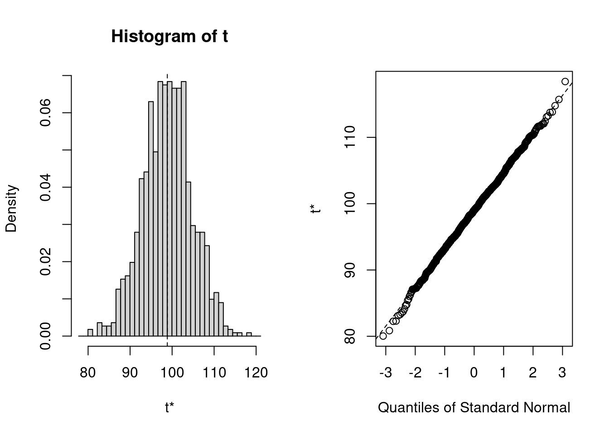

38 Sample Statistic Tutorial
Yuqing Hong and William Gu
38.1 Motivation
38.2 Data Cleaning
38.2.1 Duplicated Data
library(tidyverse)
stud_grades <- tibble(
student_id = c(1, 2, 3, 4, 5, 4, 6),
name = c("Marry", "John", "Mike", "Emma", "Elizabeth", "Emma", "Elizabeth"),
grade = c(97, 76, 84, 85, 74, 85, 73)
)
stud_grades## # A tibble: 7 × 3
## student_id name grade
## <dbl> <chr> <dbl>
## 1 1 Marry 97
## 2 2 John 76
## 3 3 Mike 84
## 4 4 Emma 85
## 5 5 Elizabeth 74
## 6 4 Emma 85
## 7 6 Elizabeth 73-
function unique() (R base function):
- extracting unique elements on a vector:
## [1] 1 2 6 4- extracting unique rows on a data frame
- Remark: Only all entries are the same will be considered as duplicated row.
unique(stud_grades)## # A tibble: 6 × 3 ## student_id name grade ## <dbl> <chr> <dbl> ## 1 1 Marry 97 ## 2 2 John 76 ## 3 3 Mike 84 ## 4 4 Emma 85 ## 5 5 Elizabeth 74 ## 6 6 Elizabeth 73 -
function distinct() (dplyr package): only the first row is preserved for duplicate rows.
distinct(stud_grades)## # A tibble: 6 × 3 ## student_id name grade ## <dbl> <chr> <dbl> ## 1 1 Marry 97 ## 2 2 John 76 ## 3 3 Mike 84 ## 4 4 Emma 85 ## 5 5 Elizabeth 74 ## 6 6 Elizabeth 73- If we want to drop duplicates based on some particular variables:
#remove duplicated rows based on variable "name" #'.keep_all = TRUE' means that not only output the variable 'name' but output all #variables distinct(stud_grades, name, .keep_all = TRUE)## # A tibble: 5 × 3 ## student_id name grade ## <dbl> <chr> <dbl> ## 1 1 Marry 97 ## 2 2 John 76 ## 3 3 Mike 84 ## 4 4 Emma 85 ## 5 5 Elizabeth 74 -
function duplicated() (R base function): identifying if the input element is duplicated or not and returning Boolean results.
- extracting unique elements on a vector:
- Remark: duplicated() return TRUE for duplicated elements, thus !duplicated() should be used to obtain unique elements.
v <- c(1, 2, 2, 6, 4, 6, 4) v[!duplicated(v)] #used as a filter## [1] 1 2 6 4- extracting unique rows on a data frame
stud_grades[!duplicated(stud_grades$student_id),]## # A tibble: 6 × 3 ## student_id name grade ## <dbl> <chr> <dbl> ## 1 1 Marry 97 ## 2 2 John 76 ## 3 3 Mike 84 ## 4 4 Emma 85 ## 5 5 Elizabeth 74 ## 6 6 Elizabeth 73 - extracting unique elements on a vector:
38.2.2 Missing Data
- Reasons for missing data
- Sensor error during data collection
- Data entry error
- Survey-subject refuse to answer some questions
- etc.
#create a simple data frame as an example to visualization fruits <- tibble( name = c("apple", "banana", "orange", "strawberry", "blueberry"), price = as.numeric(c("2", "3", "3", "four" ,"5")), weight = c(14.5, 4.4, NA, 5.1, 5.7) ) fruits## # A tibble: 5 × 3 ## name price weight ## <chr> <dbl> <dbl> ## 1 apple 2 14.5 ## 2 banana 3 4.4 ## 3 orange 3 NA ## 4 strawberry NA 5.1 ## 5 blueberry 5 5.7In this example, some value is missing before processing, and some value is missing because wrong data type is not correctly processed. - Dealing with missing data
- We should remove or fill missing data because many models can’t handle missing data. We will introduce two basic approaches to deal with NA entries.
#na.rm = TRUE shoule be set to tell the function ignore NAs. mean(fruits$price, na.rm = TRUE)## [1] 3.25#return Boolean if the input element is a missing value or not. is.na(fruits$price)## [1] FALSE FALSE FALSE TRUE FALSE- Method 1: Drop the entire row
function na.omit() removes all rows that containing missing data.
function complete.cases() can be used to removes rows that containing missing data at some particular columns. It return logical vector specifying which rows have no missing values across the columns we specified.
na.omit(fruits)## # A tibble: 3 × 3 ## name price weight ## <chr> <dbl> <dbl> ## 1 apple 2 14.5 ## 2 banana 3 4.4 ## 3 blueberry 5 5.7#used as a filter instead of outputting directly #The input fruits[ , 3:3] tell let function only consider NAs on the column #3 ("weight") fruits[complete.cases(fruits[ , 3:3]),]## # A tibble: 4 × 3 ## name price weight ## <chr> <dbl> <dbl> ## 1 apple 2 14.5 ## 2 banana 3 4.4 ## 3 strawberry NA 5.1 ## 4 blueberry 5 5.7- Disadvantages: we may lose a large number of data after removing those rows.- Method 2: Impute from data in the same column
- Instead of removing some data, we can fill those missing values with value inferred from existing values in that column. The Common filler values are 1)mean, 2)median and 3)mode.
fruits_new <- fruits #1. fill the NAs in 'weight' by the median weight of existing values fruits_new$weight = ifelse(is.na(fruits_new$weight), median(fruits_new$weight,na.rm = TRUE), fruits_new$weight) #2. fill the NAs in 'price' by the mean price of existing values fruits_new$price = ifelse(is.na(fruits_new$price), mean(fruits_new$price,na.rm = TRUE), fruits_new$price) fruits_new## # A tibble: 5 × 3 ## name price weight ## <chr> <dbl> <dbl> ## 1 apple 2 14.5 ## 2 banana 3 4.4 ## 3 orange 3 5.4 ## 4 strawberry 3.25 5.1 ## 5 blueberry 5 5.7- Disadvantages: it may lose feature interactions after filling.
38.3 Hypothesis Testing
After transform our raw sample data into consistent data which is ready for statistical inference, we can now obtain the desired sample statistic to estimate the population. And we can use hypothesis testing to check whether the sample statistic is a good approximation of the population.
38.3.1 Bootstrapping
We are trying to find a good approximation of population parameters by using sample statistics. More samples give a better approximation. But what if we can’t generate additional samples?
Bootstrapping is a statistical method that draws samples with replacement within a single dataset to create many simulated samples.
- Bootstrapping procedure:
- Draw a random sample of size n with replacement from the original sample data.
- Record the sample statistic. eg. mean, median, etc.
- Repeat steps 1 and 2 many times.
- Plot the calculated stats which forms the bootstrap distribution.
- Using the bootstrap distribution of the sample statistic, we can calculate the x% bootstrap confidence intervals and perform hypothesis testing.
- Implementation in R
- The package boot allows us to do Bootstrapping.
- Create a function that computes the statistic we want to use, such as mean, median, correlation, etc.
- Note: Before calling boot, we need to define a function that will return the desired statistic(s). The first argument passed to the function should be the dataset. The second argument can be an index vector of the observations in the dataset or a frequency or weight vector that informs the sampling probabilities. For this example, we use the default index vector i, and the statistic of interest is the mean for this example.
x1 <- sample(1:199,100,replace=FALSE) #used as an example of original sample data fc <- (function(d,i) mean(d[i]))- Using the boot function to find the R bootstrap of the statistic.
b1<-boot(x1,fc,R=1000)- Plot the generated bootstrap distribution. In this example, the distribution of the bootstrap samples’ mean is shown.
# Plot the bootstrap sampling # distribution using ggplot plot(b1)- Using the boot.ci() function to get the confidence intervals using bootstrap samples.
- return x% confidence interval by setting confidence level conf = x. Here, we use the 95 percent confidence interval.
- set type of intervals by
- “norm”: using the Standard confidence limits methods which compute CI by the standard deviation.
- “basic”: using the Hall’s (second percentile) method which calculate upper and lower limit of test statistic by percentile.
- “stud”: resamples the bootstrap sample to find a second-stage bootstrap statistic and use it to calculate the CI.
- “perc”: using Quantile-based intervals to calculate the CI.
- “bca”: Bias Corrected Accelerated use percentile limits with bias correction and estimate acceleration coefficient corrects the limit and find the CI.
- or simply type = “all” to obtain all five types of intervals
mean(x1) #output the sample mean## [1] 98.86## BOOTSTRAP CONFIDENCE INTERVAL CALCULATIONS ## Based on 1000 bootstrap replicates ## ## CALL : ## boot.ci(boot.out = b1, conf = 0.95, type = c("norm", "basic", ## "perc")) ## ## Intervals : ## Level Normal Basic Percentile ## 95% ( 87.43, 110.15 ) ( 87.43, 110.47 ) ( 87.25, 110.29 ) ## Calculations and Intervals on Original Scale- As for this example, we randomly sample 100 numbers without replacement from (1,199) to simulate the random sample data. If we want to use the sample mean mean(x1) to approximate or represent the population true mean, we can use Bootstrapping to generate more samples and test our original sample statistic. Here, the boot.ci() gives that we are 95 percent confident that the population mean is in this interval. If the sample mean mean(x1) is in this interval, we can’t say that it is a bad approximation.
38.3.2 Hypothesis Testing
Hypothesis testing is a statistical method that is used to decide whether the data sufficiently support a particular hypothesis.It evaluated two mutually exclusive statements about a population, and this method is used to access the plausibility of a hypothesis by using sample data.
-
Keywords to understand:
Null Hypothesis(H0): In statistics, the null hypothesis is a general given statement that the statistic observed is due to random chance or that there is no difference between two measured cases or among groups (e.g. true difference in means is equal to 0). It is usually a statement we want to prove wrong.
Alternative Hypothesis(H1): The alternative hypothesis is the hypothesis that is contrary to null hypothesis, which we want to prove right. (e.g. true difference in means is not equal to 0).
Level of significance: It refers to the degree of significance in which we accept or reject the null-hypothesis. The value is the probability of a false rejection in a hypothesis test. We usually select a level of significance of 5%, which means your output should be 95% confident to give similar predictions.
P-value: The P value, also known as calculated probability, is the probability of finding the observed or more extreme results when the null hypothesis(H0) of a study given problem is true. When P value is less than the chosen significance level, it has a really small chance to obtain the observed value given the null hypothesis is true, then we should reject the null hypothesis.
Type I error & Type II error: Type I error (= p value): When we reject the null hypothesis, although that hypothesis was true. Type II error: When we accept the null hypothesis but it is false.
-
Procedure of Hypothesis testing
- State null and alternative hypothesis.
- Formulate an analysis plan, set the significance level.
- Analyze sample data with a test statistic. Use the value of the test statistic to make the decision based on the significance level.
Implementation in R:
-
T-test is usually used on relatively small-amount normally distributed data without known standard deviation. We use t.test() for T-tests in R.
- One sample T-test is used to test the mean of sample with a known mean value:
In this example, we randomly sample 50 numbers from a normal distributed population with true mean 10 to simulate our sample data. Running the t test given that the null hypothesis is “the true mean is 10” will result a large p-value, which means we should not reject the null hypothesis as expected. By contrast, running the t test given that the null hypothesis is “the true mean is 6” will result a really small p-value, which means it has a really small chance to obtain the observed sample mean given the null hypothesis is true, then we should reject the null hypothesis.
## [1] 10.20618t.test(x, mu=10) # setting H0: true mean is equal to 10## ## One Sample t-test ## ## data: x ## t = 1.8931, df = 49, p-value = 0.06426 ## alternative hypothesis: true mean is not equal to 10 ## 95 percent confidence interval: ## 9.987311 10.425043 ## sample estimates: ## mean of x ## 10.20618t.test(x, mu=6) # setting H0: true mean is equal to 6## ## One Sample t-test ## ## data: x ## t = 38.62, df = 49, p-value < 2.2e-16 ## alternative hypothesis: true mean is not equal to 6 ## 95 percent confidence interval: ## 9.987311 10.425043 ## sample estimates: ## mean of x ## 10.20618- Two sample T-test is used to compare two sample data and indicates if they are same:
In this example, we randomly sample 20 and 50 numbers from a normal distributed population with true mean 5 into two sets of sample data. Running the t test over two samples sets the null hypothesis to be “the difference between means is 0” will give a large p-value, which fails to reject H0 as expected. When the test is used on random samples with different means, we would expect an extremely small p value which indicates that the difference is statistically significant, in that case we should reject the null hypothesis. When samples are having same size, we can also set parameter pairs to True to perform paired test
## ## Welch Two Sample t-test ## ## data: x and y ## t = 0.31774, df = 37.268, p-value = 0.7525 ## alternative hypothesis: true difference in means is not equal to 0 ## 95 percent confidence interval: ## -0.4656674 0.6389280 ## sample estimates: ## mean of x mean of y ## 5.023414 4.936783t.test(x1, y, paired=TRUE)## ## Paired t-test ## ## data: x1 and y ## t = 0.60717, df = 19, p-value = 0.5509 ## alternative hypothesis: true mean difference is not equal to 0 ## 95 percent confidence interval: ## -0.5656056 1.0278536 ## sample estimates: ## mean difference ## 0.231124 - One sample T-test is used to test the mean of sample with a known mean value:
- What do we do when normality assumption fails? We’ll use U-test, which is usually used on relatively large sample data, when comparison has to computed on one sample and the data is non-parametric. We use wilcox.test() for U-test in R.
- One-sample U-test takes “exact” parameter, which is a logical indicating whether an exact p-value should be computed.
In this example, we randomly sample 100 numbers from a normal distributed population with true mean at 0. Hence, the null hypothesis is “the true location of mean is at 0”. By this test we’re expected to get a large p-value which fails to reject H0 as expected. We can also set mu=3, and we’ll get extremely small p-value and we should take alternative hypothesis: “the true mean is not at location 3”.
x <- rnorm(100) wilcox.test(x, exact = FALSE)## ## Wilcoxon signed rank test with continuity correction ## ## data: x ## V = 2434, p-value = 0.7557 ## alternative hypothesis: true location is not equal to 0wilcox.test(x, mu = 3)## ## Wilcoxon signed rank test with continuity correction ## ## data: x ## V = 0, p-value < 2.2e-16 ## alternative hypothesis: true location is not equal to 3- Two-sample U-test is used to compare two sets of sample data:
In this example, we randomly sample 100 numbers from a normal distributed population with different true mean at 10 and 20 to create two sample dataset. The null hypothesis of this test is “the difference of ture means is 0”. By this test we’ll expect p-value < 2.2e-16 since the mean is different, and we should reject H0. Alternatively, when we get large p-value for our own data, we should not reject the null hypothesis.
x <- rnorm(100, 10) y <- rnorm(100, 20) wilcox.test(x, y)## ## Wilcoxon rank sum test with continuity correction ## ## data: x and y ## W = 0, p-value < 2.2e-16 ## alternative hypothesis: true location shift is not equal to 0 - One-sample U-test takes “exact” parameter, which is a logical indicating whether an exact p-value should be computed.